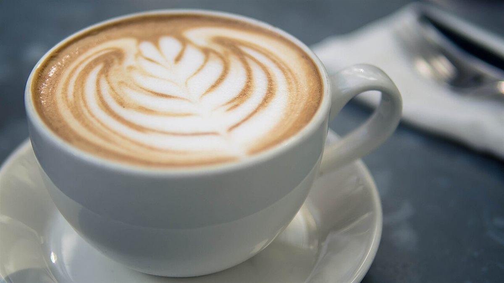
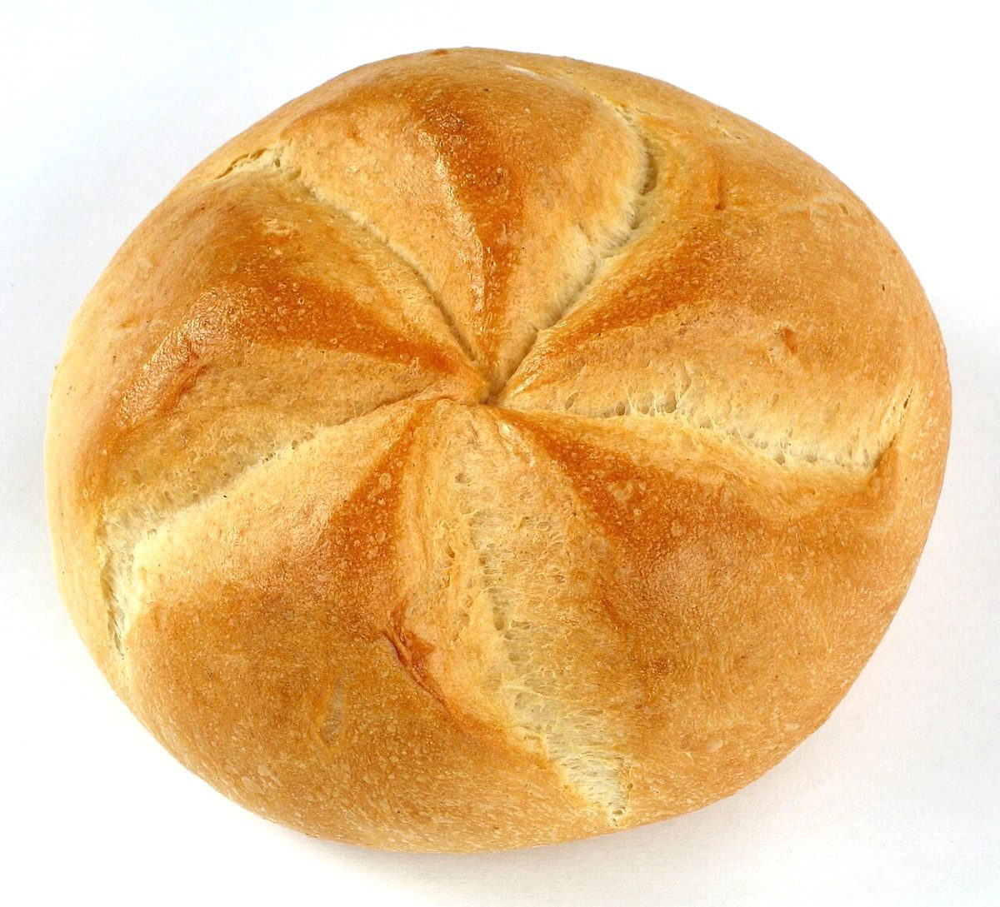
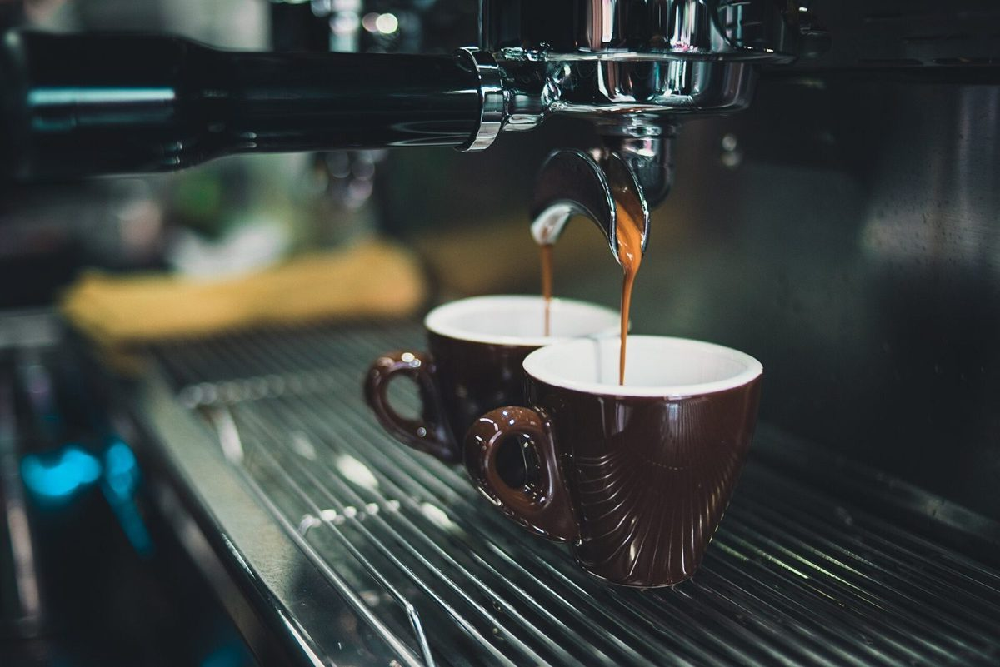

制作側の連想
紙をつくる機械を、配置図にしてみる
このサイトは、紙をつくる大きな機械(抄紙機)を、左から右へ流れる一枚の図にしたつもりで作りました。六つの部位に番号をふり、上の図と並べています。制作側の連想で、お店の理念・由来とは無関係です。図は一般的な構成を簡略にしたもので、実際の機械の仕様を示すものではありません。
凡例
六つの部位
- 01ヘッドボックス水に溶いた紙のもと(紙料)を、幅いっぱいにそろえて流し出す箱。
- 02ワイヤーパート網の上で水を切りながら、繊維を紙の形に並べていく部分。
- 03プレスパートロールで挟み込み、さらに水を絞り出す部分。
- 04ドライヤーパート温めた円筒を何本も使い、紙を沿わせて乾かす部分。
- 05カレンダーロールを縦に重ねて挟み、表面をならして厚みをそろえる部分。
- 06リール仕上がった紙を、一本の大きな巻きに巻き取る部分。
写真(イメージ)
コーヒーとパンの写真





写真はコーヒーとパンのイメージです。お店のものではなく、お店で提供している商品を示すものでもありません。
ご案内
お店のこと(確認できたものだけ)
| 所在地 | 〒949-6407 新潟県南魚沼市島新田35-1 パーク メゾン ワダ |
|---|---|
| 電話 | 準備中 |
| 営業時間 | 準備中 |
| 定休日 | 準備中 |
| ご予約 | 準備中 |
| 駐車場 | 準備中 |
| SNS | Instagram @shinsaibashii |